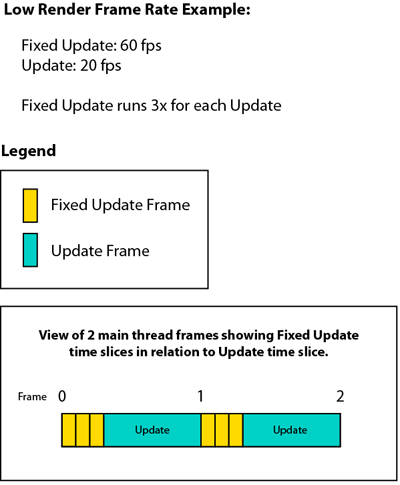

Frequently Asked Questions
Topics:
- Does Rewired support Oculus Touch, HTC Vive, etc?
- Does Rewired support this controller?
- Can you/I add support for this controller?
- What platforms does Rewired support?
- Does Rewired support WiiU?
- Does Rewired support Nintendo Switch?
- Does Rewired support WebGL?
- Does Rewired support touch and gyro/accelerometer input?
- Does Rewired support force feedback?
- Does Rewired support framerate-independent input?
- Can't Fixed Update be used for low-latency input at low frame rates?
- Does Rewired support multiple independent mice and keyboards?
- Where is Rewired's input configuration data saved?
- How can I copy my input configuration to another project?
- How do you consume/use an input?
- My joystick's dead zone is too large/small. How do I change it?
- How can I bind an Action to a button short-press and another Action to a long-press?
- Can the Nintendo WiiU 4-player adapter be used without requiring users to install a driver?
- Does Rewired support the official Nintendo WiiU adapter on desktop platforms?
- Can Rewired set the mouse cursor position?
- Can I get the Rewired source code?
- What does "this extension requires one licence per seat" mean?
- Do you offer educational or bulk license discounts?
Does Rewired support Oculus Touch, HTC Vive, etc?
Rewired has limited support for Oculus Touch and HTC Vive controllers. Please see the following sections for more information:
Also, see Does Rewired support this controller?
Does Rewired support this controller?
Usually, this question is asked about exotic controllers such as Arduino, Oculus Touch and Remote, HTC Vive, exotic VR controllers, or some other special-purpose controller that requires its own SDK to use. Rewired does not support such controllers directly. Any use of such controller would require you set up the company's SDK and use a Custom Controller to add support for the device. Even this may not work for all devices. (See this topic for information on limited support for Oculus Touch and HTC Vive / OpenVR.)
Rewired is not a general-purpose, low-level API for working with any and all HID devices.
See Supported Controllers for more information.
Can you/I add support for this controller?
It depends. Not all controllers are candidates for Rewired's automatic controller recognition system. The controller would have to be evaulated for inclusion.
Rewired's controller recognition system relies on information returned by the controller in order to be able to recognize it and load a hardware definition. Many times, the identifying information provided by the device is inadequate or too generic to be relied upon for recognition, for example those that show up as "Generic USB Joystick", "USB Gamepad", etc. This is true of a huge number of generic PC gamepads. The manufacturers of these gamepads create dozens and dozens of different products under a large variety of brands, some even with different button layouts, yet all of these devices provide exactly the same identifying USB/HID information (both product name and VID/PID). This makes it impossible to auto-recognize these controllers. If you were to add a controller definition for just one of these controllers, all others that don't match the button layout exactly would report incorrect element names and default mappings in the best case, and would be essentially unusable in the worst case. For these controllers, the only solution is to not provide a controller definition so that they will be treated as Unknown Controller which the user can map manually using Control Mapper or your own custom control remapping system.
The solution to allowing users to use these kinds of controllers and others without definitions is to give your players a way to remap their controls. It is a must that you have a system to let your player remap their controllers so they can use any controller they want. It is a core feature of Rewired to allow users to be able to use any controller regardless of whether or not it is recognized, including the ability to save and load their configurations. The controller recognition system is only really there as a convenience so that the most common controllers work without manual configuration out of the box, but it is not a substitute for being able to map controllers.
See How To's - Creating new controller definitions for more information on adding your own controller definitions.
What platforms does Rewired support?
See the list of tested platforms here.
Does Rewired support WiiU?
WiiU is not a directly supported platform. In addition, WiiU controllers do not work through UnityEngine.Input so the default fallback mode doesn't work. However, it is possible to support WiiU through the use of Custom Controllers.
Does Rewired support Nintendo Switch?
Yes, but it requires installation of a separate plugin and is only available to licensed Nintendo developers. Please visit the Nintendo Developer Portal for more information on how to obtain the plugin.
Does Rewired support WebGL?
Rewired does run on WebGL and includes a native library for WebGL (Unity 5.0+) allowing it to get input directly from the web browser avoid many issues with Unity's input system on WebGL. With the exception of a few of the most common gamepads, most controllers on WebGL will not be recognized automatically are only supported via manual user mapping of controls at runtime through the use of a system like Control Mapper.
Even with a native input librarly, controller support on WebGL is problematic at best. Rewired does its best to make things work when possible, but there are many bugs and issues that vary by web browser, version of the browser, operating system, version of the operating system, and drivers in use which simply cannot be fixed by any layer above the web browser itself.
A few issues / limitations:
- Some controllers do not work properly or at all on some platforms in some web browsers.
- Individual elements on certain controllers may not work properly or at all such as many D-Pads not working, buttons being stuck on permanently, etc.
- There is a limit on the number of controllers simultaneously supported that varies depending on the browser in use.
- As a security measure by the browser, controllers do not appear to the system until a button is pressed on a controller.
- Vibration is not supported. (Support for gamepad vibration in browsers is at the very early experimental stages.)
Does Rewired support touch and gyro/accelerometer control?
On-screen touch joysticks
Rewired comes with set of pre-built touch controls for use directly in your games. For other special needs, you can use the Custom Controller system to pipe in data from any kind of control which you can either build or download from the Unity Asset Store or elsewhere. There is a simple on-screen touch joystick example included with Rewired showing the concept.
Touch swipes and gestures
Rewired does not include any handling of swipe or gesture recognition. For gestures, if it makes sense to map them to input Actions, you can use the Custom Controller system coupled with a gesture recognizer script/asset and pipe the gestures in as button values in a Custom Controller and then map those buttons to Actions.
Gyro and accelerometer input
Rewired comes with a Tilt Control component which can be used for basic tilt input. It also supports tilt and rotate on the Siri Remote on tvOS, and the gyro on the Sony Dual Shock 4 and Nintendo Joy-Cons (Switch platform only). For any other tilt/motion needs, you can use UnityEngine.Input to get the motion data, process it, and then use that information to feed into a Custom Controller to map certain types of motion to Actions. Rewired also comes with a simple tilt control example.
Does Rewired support force feedback?
The only form of force feedback currently supported by Rewired is gamepad vibration. Vibration works with certain controllers on certain platforms and input sources.
Currently vibration is only supported on the following controllers and platforms and input sources:
| Windows | OSX | Linux | Windows 8.0 & 8.1 Store | Windows 10 Universal | XBox One | PlayStation 4 | Nintendo Switch | Stadia | |
| Xbox 360 Controller |
|
Native (Driver required) |
|
Native | Native | — | — | — | Native |
| Xbox One Controller |
|
Native (2 of 4 motors supported) (Driver required) |
Not tested | Native (2 of 4 motors supported) |
Native (All 4 motors supported) |
Native (All 4 motors supported) |
— | — | Native |
| Xbox One S Controller |
|
— | — | Native (2 of 4 motors supported) |
Native (All 4 motors supported) |
Native (All 4 motors supported) |
— | — | Native |
| Sony DualShock 4 | Raw Input (Enhanced Device Support required) |
Native (Enhanced Device Support required, wired only) |
— | — | — | — | Native | — | Native |
| Nintendo Joy-Cons and Pro Controller | — | — | — | — | — | — | — | Native (All motors and features supported) |
Native (Pro Controller) |
| Stadia Controller | — | — | — | — | — | — | — | — | Native |
* SDL2 does not support separate motor speed values, so all motors are treated as a single motor.
Does Rewired support framerate-independent input?
Not at the present time. If framerate-independent input were to be supported in the future, it would only allow you to access a queue of Action events that took place over the last frame for analysis and not the ability to instantly respond to input events that occur in the middle of the current frame. This is because if you were to use any of the Unity API in response to an event that was triggered from another thread, Unity would throw an exception or crash because the entire Unity API is not thread-safe and can only be accessed via the main thread. This means you could not, for example, move the camera instantaneously based on a mouse input event that occured in the middle of the current frame in order to reduce input latency. Unity would just throw an exception when you tried to modify anything on the Camera, Transform, or any other component from another thread.
Can't Fixed Update be used for low-latency input at low frame rates?
It is sometimes suggested to me that if you were able to get and process fresh input values in Fixed Update, games running at low frame rates could maintain responsive input because Fixed Update runs at 60 fps even when the game is only running at 20 fps. This sounds reasonable on the surface, but it's not true. In order to understand why, you need to understand how Fixed Update works.
Fixed Update is not a fixed-time-step update. It is a simulation of one.
It is true that over 1 second, Fixed Update will attempt to run at the specified rate -- 60 fps, for example.
Depending on the current main thread update rate, Unity will execute 0, 1, or multiple Fixed Update frames for every Update frame it executes. These Fixed Update frames are executed on the same thread as Update immediately before Update is executed. It varies the number of Fixed Update frames it executes per frame to try to maintain the desired rate over 1 second of time (60 fps).
The most important thing to understand is that these Fixed Update frames are not actually spaced out over time in increments of 1/60th of a second. When multiple Fixed Update frames are executed sequentially in a frame (when the render frame rate is lower than physics time step), several Fixed Update frames are rendered back-to-back as fast as the CPU will possibly allow. This can easily be illustrated by timing frame time delta of Fixed Update frames using Time.realtimeSinceStartup. You will see the value is an extremely tiny number, not the expected 0.1667 seconds you should see at 60 fps. Physics and other code that uses the time or delta time value work corretly because the Time class reports the simulated delta time of 0.1667 seconds, not the actual delta time of a CPU speed and workload dependent value.
So over the course of a single render frame, the time window for recording input changes using Fixed Update is equal to the actual time it takes for those Fixed Update frames to execute, not the simulated time. In most cases, the actual time elapsed across successive Fixed Update frames is so short as to be completely useless to get any useful input data. For the entire remainder of the render frame (Update, Vsync, etc.), no new input values can be sampled. This is the reason Fixed Update is totally unsuitable for solving the input latency problem.

Does Rewired support multiple independent mice and keyboards?
Not at this time. Multiple mice will act as one mouse and multiple keyboards will act as one keyboard.
Where is Rewired's input configuration data saved?
In each Rewired Input Manager game object as serialized data. See Input Manager for more details.
How can I copy my input configuration to another project?
See How To's - Copying input configuration to another project.
How do you consume/use an input?
There is no "consume" or "use" concept in Rewired. You cannot change or override
the final Action input values because they are set by the hardware events and then calculated
based on combined values of all input sources that contribute to that Action.
This question is almost always asked due to the desire to use the input system as part of in-game player state/permission management. For example, you should not think of
Rewired's Player.GetButtonDown as a flag denoting "game player is now firing". It
should be thought of as a signal of the user's intent entirely separate
from the game simulation. GetButtonDown("Fire") is equal to "the user wants
to fire". Whether or not the game player is allowed to fire at that moment is a
game player state management issue and needs to be handled in your game
code.
"User wants to fire" -> If "game player is allowed to fire" -> then "fire".
Using Rewired or any input system as an integral part of game state or permission management is not a correct usage. This way there is no need for something like consuming input and injecting your game state permission management into the input system.
My joystick's dead zone is too large/small. How do I change it?
Rewired includes default dead zones for every recognized joystick. They are
built into the hardware definition for each joystick and specified
per-platform, per-input source. These defaults should not be changed because they
will be overwritten when you update Rewired. There is not currently a means of non-destructively overriding default hardware definition settings per-device.
Controller dead zones are very individualized to each physical joystick and
can vary due to manufacturing, wear and tear, etc. As such, you should not
simply set an extremely large default dead zone if your joystick drifts. Instead, you need to allow
your users to set their own dead zone specific to their joystick. Rewired
allows you set all kinds of calibration information for joysticks through
scripting. See How To's - Calibrating controller axes for more information. You can see this implemented in both the ControlRemappingDemo1 and Control Mapper.
Using Control Mapper in your game will give users the option to remap and
calibrate their controllers.
How can I bind one Action to a button short-press and another Action to a long-press?
That would require the ability to bind an Action to a gesture, a gesture being an event triggered when some element value changes over time matching some pre-defined pattern. Rewired does not support this at the present time.
There are dozens of potential gestures that one could possibly want to handle for every type of controller element (axes especially). Rewired does not provide any binding of Actions to gestures. Action bindings are only to controller elements. That Action can then be queried for axis value, button on, button off, button just pressed, button just released, button double clicked, button short pressed, and button long pressed events. The Action bindings are not bound to gestures but to the button/axis element, and the Action can then be queried for those events listed above.
Allowing binding Actions to gestures such as "short press X", "press and hold X", etc. would greatly complicate user control rebinding. It would also complicate the Rewired editor requiring potentially dozens of options per supported gesture type (timings, activation exclusivity, cancellation behaviors, etc.) Because of the vast number of possible variables, these things are better handled in code based on the individual needs of the game in question.
A gesture recognition and binding system would likely have to be an entirely separate layer on top of Rewired's current system. Gesture recognition and Action binding are not currently planned features.
Can the Nintendo WiiU 4-player adapter be used without requiring users to install a driver?
It is not possible. The Nintendo WiiU adapter is not a standard HID device and cannot use the default Windows HID driver. This is an issue with the device because it was not designed for use on Windows / PCs. It cannot be used by any program without a 3rd party driver installed that can make it appear as a standard HID device. There is no way around this.
Does Rewired support the official Nintendo WiiU adapter on desktop platforms?
Rewired does not provide extended support for the Nintendo WiiU adapter.
As it states there:
Any controller which does not have a hardware definition will be usable only
through user mapping or by mapping actions to numbered axes and buttons in
the Unknown Controller map. These unrecognized controllers can only be
supported if you provide your users a way to remap their controls, such as
by using the included Control Mapper or by creating a custom control
remapping screen. If you do not provide users with a way to map their
controls, only the above listed recognized controllers will be usable. If
you do provide your users a way to map their controls, virtually any
controller will be usable.
The Nintendo WiiU adapter does not have an official driver and cannot be
used without some form of hack or 3rd party driver.
This device cannot even be detected without a HID driver. If you look at the Dolphin
Wiki, which is where most people use this adapter, you'll see several
methods to make it work in Dolphin.
All of these methods are hacks and none of them can provide any proper
identifying HID information which could be used to make a controller
definition for automatic recognition. There is no official or generally-used driver for this device that would identify it explicitly as a Nintendo WiiU Adapter, so it is not a candidate for
automatic controller recognition.
If you've provided a way to remap and assign controls to your users, they
should be able to use the device through user assignment and mapping as long
as they've gone through all the steps to set up the driver to make it be
recognized as a HID device.
Can Rewired set the mouse cursor position?
No. Rewired does not allow you to set the OS mouse cursor position on any platform.
You can use Player Mouse to move one or more sprite-based cursors with a joystick, keyboard, etc.
Can I get the Rewired source code?
There is no source code licensing option at this time. If having the source code is critical to your project, you should not purchase Rewired.
What does "this extension requires one licence per seat" mean?
The EULA terms are defined by the Unity Asset Store EULA. See Appendix I for information on assets purchased through the Unity Asset Store. Specifically Appendix I, section 2.3 outlines terms for all editor extension assets.
Rewired is only sold on the Unity Asset Store and the license is bound by these terms as created and defined by Unity. I do not have legal authority to interpret these terms in any other way except as written and defined by the Unity Asset Store EULA. I cannot provide further clarification of or exceptions to these terms.
Please contact Unity for clarification of or questions about the EULA terms.
Do you offer educational or bulk license discounts?
Rewired is sold only through the Unity Asset Store, therefore there are no other licensing options but what is available through the Unity Asset Store.